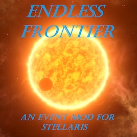

Endless Frontier: An Event Mod
{kind=link}

Type
Author(s)
Status
Forum
Steam workshop
Endless Frontier is an event mod that adds dozens of new anomalies, events, archaeological sites, and more to the galaxy, adding tons of new content to your Stellaris games. Some of these are harmless fluff and world-building, some are moderately useful, and some confer significant advantages that could save your empire or, if mismanaged, bring it to its knees.
This page is still under construction.
New content
Beware of story spoilers!
Anomalies
| Anomaly | Level | Spawn criteria | Empire | Outcome(s) |
|---|---|---|---|---|
| Improbable Oasis | 2 |
A prescripted |
Planet gains the
Empire gains the
| |
| A Sleeping Giant | 3 |
|
Player empires only |
Adds a
Colonization begins the Supervolcano event chain, see below |
| A Thousand Blows | 3 |
|
Planet gains the
| |
| Temporal Anomaly | 8 |
|
Player has two options:
| |
| Elliptical Orbit | 3 |
|
Planet cycles between an Arctic, Ocean, and Savanna World every 92 days and gains the
| |
| Familiar Desolation | 1 |
|
Is either: |
Planet changes its appearance and gains a +9 |
| Retrograde Orbit | 5 |
|
| |
| Primitive Ecumenopolis | 3 |
A prescripted |
| |
| Tug-of-War | 4 |
A prescripted |
Player gains | |
| The Water Looks Inviting | 2 |
|
| |
| Celestial Peaks | 3 |
|
| |
| Superjovian | 6 |
|
| |
| Decaying Moon | 3 |
|
Player empires only |
|
| Planet/Moon With a View | 1 |
|
| |
| Young Sun | 4 |
|
Star gains:
| |
| Inviting Planet | 2 |
|
Is either:
|
|
| Ringed Moon | 4 |
|
| |
| Heavy Snowball | 6 |
|
| |
| Pressure Cooker | 3 |
|
Player chooses between:
| |
| Crooked Planet | 3 |
|
| |
| Supernova Remnant | 6 |
One of:
|
|
|
| Frail Fusion | 7 |
|
| |
| Staring at the Sun | 3 |
|
| |
| History Will Vindicate Me | 3 |
|
Player chooses between:
| |
| Tiny Homeworld | 4 |
|
Planet gains:
| |
| Subsatellite | 4 |
A prescripted habitable world in the Moonmoon system. |
Player gains | |
| Sickly Planet/Moon | 3 |
|
| |
| Equatorial Bulge | 3 |
|
| |
| Crumbling Mountains | 4 |
|
Planet gains the Crumbling Mountains deposit, with the following effects: | |
| The Last Outpost | 4 |
|
Planet gains the | |
| Those Left Behind | 4 |
|
Player chooses between:
| |
| Bizarre Biology | 5 |
|
Planet gains the (unrecognized string “microscopic life” for Template:Icon) Indigestible Ecosystem modifier, with the following effects:
| |
| Unstable Asteroid | 3 |
|
Asteroid gains one of the following deposits (player's choice):
| |
| Obscured By the Light | 3 |
|
Player unlocks | |
| Post-Apocalypse | 4 |
|
Planet reveals a | |
| Dry Planet/Moon | 6 |
|
Planet gains the (unrecognized string “superflare warning” for Template:Icon) Death By Red Giant modifier, with the following effects:
| |
| At First Glance | 1 |
One of:
Scientist:
|
|
Scientist gains the |
| Superterrestrial Planet/Moon | 4 |
|
Planet gains:
| |
| Lunar Base | 4 |
|
Moon gains a +3 | |
| Veiled Planet/Moon | 3 |
|
| |
| Strange Symmetry | 3 |
One of:
Neighboring system contains a |
| |
| Super Moon | 4 |
|
Moon gains:
Player gains | |
| Unstable Tectonics | 3 |
|
Planet gains:
If planet has research deposit:
Otherwise:
| |
| Methuselah | 3 |
|
Player gains | |
| Strange Singularity | 7 |
|
Player empires only |
|
| Razor's Edge | 8 |
|
Player chooses between:
|
{kind=link}
{kind=link}
Archaeological sites
| Site | Stages | Spawn criteria | Empire | Outcomes (all stages) |
|---|---|---|---|---|
| A Boring World | 4 |
|
Player only |
|
| The Intruder | 4 |
|
Player only |
|
| Curious Trees | 4 |
|
Player only |
|
| No Mere Moon | 4 |
A prescripted |
| |
| All That Glitters | 3 |
|
Player only |
|
| Drowned | 4 |
|
Player only |
|
| Starship Wreck | 4 |
|
Player only |
+4 |
| Frozen Over | 4 |
A prescripted |
| |
| The Reticent | 5 |
|
|
|
| Children of Earth | 5 |
|
Is either: |
|
New star systems
- Shadow moon system, which consists of a Red Giant, a hot Jupiter gas giant, and a colonizable "Shadow World" orbiting inside the gas giant's L2 Lagrangian point. The latter world has an anomaly, "Unexpected Oasis".
- Bomb system: A system containing a Broken World (with deposits of
 Minerals,
Minerals,  Rare Crystals, or
Rare Crystals, or  Volatile Motes) and a gas giant with
Volatile Motes) and a gas giant with  Exotic Gases and two moons: a large Relic World and a smaller Barren World. The outer moon has an archaeological site, "No Mere Moon".
Exotic Gases and two moons: a large Relic World and a smaller Barren World. The outer moon has an archaeological site, "No Mere Moon". - Landlocked system: A binary system with an inhabited, post-apocalyptic Relic World and no other planets or asteroids. The Relic World has an anomaly, "Primitive Ecumenopolis".
- Tug-of-War system: A system containing a pair of binary gas giants with a Shattered World trapped in between them. The Shattered World has an anomaly, "Tug-of-War".
- Moonmoon system: A system containing a gas giant with several moons and one "moonmoon", a moon orbiting another moon. This world has an anomaly, "Subsatellite".
- Rogue planet system: A system consisting of two
 Frozen Worlds, one a moon of the other, with no stars present. Spawns as part of the "Rogue Planet" event chain.
Frozen Worlds, one a moon of the other, with no stars present. Spawns as part of the "Rogue Planet" event chain. - Multiplanetary primitives' system: A binary system containing three spacefaring primitive civilizations and their various fleets. Claiming the system with a starbase will begin the "Multiplanetary Civilization" event chain.
Event chains
Supervolcano
Upon colonizing a planet with a 
 Dormant Supervolcano, the game will begin performing a check every five years.
Dormant Supervolcano, the game will begin performing a check every five years.
Each time the check occurs while the volcano is inactive, there is a 25% chance of the volcano stirring, causing alarm on the colony. A few months later, there is another event that follows up, either returning the colony to normal or, more rarely, confirming that the supervolcano is now active. In the latter event, a debuff is applied:  −10% Stability and
−10% Stability and  [1] −100% Immigration. No actual damage is applied to the colony at this point.
[1] −100% Immigration. No actual damage is applied to the colony at this point.
As before, the game checks the colony every five years, with a 25% chance of tremors. This time, however, if the second check returns positive (again, with a 25% chance), the volcano will erupt, with the following results:
- The planet turns into a
 Tomb World
Tomb World - Adds 60
 Devastation
Devastation - Any ongoing terraforming on the planet is canceled
- Damaging
 Blockers are produced
Blockers are produced - Any existing Archaeological Site on the planet will be destroyed

 Lush and
Lush and  Natural Beauty modifiers are removed
Natural Beauty modifiers are removed
Because the checks occur every five years, and the ill outcomes are all weighted at 25%, the supervolcano will, on average, erupt ~80 years after the planet is colonized, although unfavorable RNG can cause it to happen in as little at 10.
After one year, the player will be notified that the eruption has finally ended, with two potential outcomes, each weighted at 50%:
- The planet has stabilized, and will suffer no further ill effects.
- The planet is dying, and will become an inhospitable
 Toxic World in 5400 days. This can be prevented by terraforming it back into a regular planet class before that deadline.
Toxic World in 5400 days. This can be prevented by terraforming it back into a regular planet class before that deadline.
Other
Planets with a large, solitary/innermost moon will have the 
 Binary Planet modifier applied to both itself and said moon, granting
Binary Planet modifier applied to both itself and said moon, granting  +5% Physics from Jobs.
+5% Physics from Jobs.
- ↑ Obsolete icon code, use "pop growth speed"